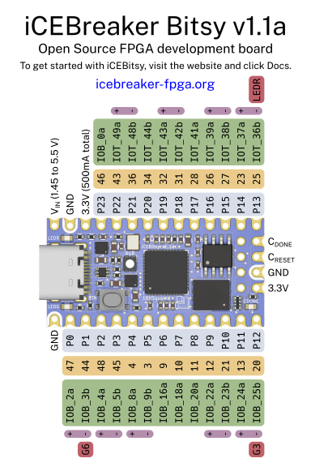

dfu-util.exe -l, the device cannot be seen:
dfu-util 0.9
Copyright 2005-2009 Weston Schmidt, Harald Welte and OpenMoko Inc.
Copyright 2010-2016 Tormod Volden and Stefan Schmidt
This program is Free Software and has ABSOLUTELY NO WARRANTY
Please report bugs to http://sourceforge.net/p/dfu-util/tickets/
dfu-util.exe -l, the device cannot be opened:
Cannot open DFU device 1d50:6146
C:\Users\gojimmypi>C:\Download\dfu-util\dfu-util.exe -l
dfu-util 0.9
Copyright 2005-2009 Weston Schmidt, Harald Welte and OpenMoko Inc.
Copyright 2010-2016 Tormod Volden and Stefan Schmidt
This program is Free Software and has ABSOLUTELY NO WARRANTY
Please report bugs to http://sourceforge.net/p/dfu-util/tickets/
Cannot open DFU device 1d50:6146
dfu-util.exe -l, the device is working properly:
dfu-util 0.9
Copyright 2005-2009 Weston Schmidt, Harald Welte and OpenMoko Inc.
Copyright 2010-2016 Tormod Volden and Stefan Schmidt
This program is Free Software and has ABSOLUTELY NO WARRANTY
Please report bugs to http://sourceforge.net/p/dfu-util/tickets/
Found DFU: [1d50:6146] ver=0004, devnum=12, cfg=1, intf=0, path="1-1.3", alt=1, name="RISC-V firmware", serial="your serial"
Found DFU: [1d50:6146] ver=0004, devnum=12, cfg=1, intf=0, path="1-1.3", alt=0, name="iCE40 bitstream", serial="your serial"
cd /mnt/c/workspace
git clone https://github.com/icebreaker-fpga/icebreaker-examples.git
cd icebreaker-examples/blink_count_shift
make
dfu-util.exe -a 0 -D blink_count_shift.bin
|  |
|
iCEBreaker Bitsy Pinout by
0xdec
|
git clone https://github.com/esden/icebreaker-examples.git esden-icebreaker-examples
cd esden-icebreaker-examples
git branch --all
git checkout bitsy
cd blink_count_shift
make clean
make BOARD=bitsy1
$ make
../board.mk:18: *** Please specify BOARD, options are "icebreaker", "bitsy0" or "bitsy1". Stop.
dfu-util.exe -a 0 -D C:\workspace\esden-icebreaker-examples\blink_count_shift\blink_count_shift.bin
Booting DFU image..
Flash Manufacturer : ef 40 18
Flash Unique ID : e4 69 98 d2 43 59 15 2f
Command>
--placer sa to run nextpnr like this:
nextpnr-ice40 --placer sa --up5k --package sg48 --json iua_icebreaker_top.json --pcf ../impl/iua_icebreaker_pins.pcf --asc iua_icebreaker_top.asc --freq 50
There are debug pads on the bity bottom where you can easily solder a header.
{% include code_header.html %}set_io -nowarn usb_dp_pad 31 set_io -nowarn usb_dn_pad 34
Those are the fpga pins where to connect on the icebreaker side.
{kind=link}
{kind=link}